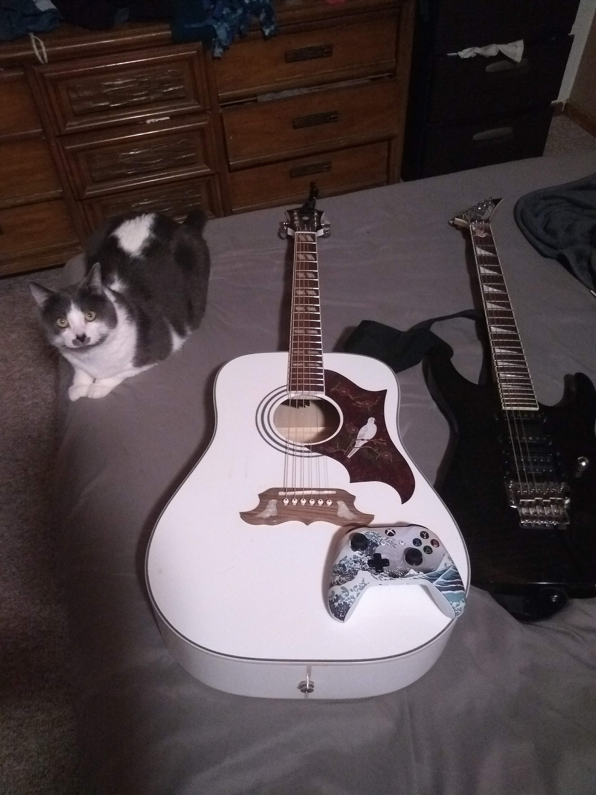

I was born on October 19th, 1994. I grew up in a small town in south eastern Idaho named Notus. After graduating from Notus, I went on to the College of Idaho in 2013 to study Health Science and play on the football team. I attended CofI for 2 years before I took a hiatus from school. I then went back to the College of Western Idaho in 2018 where I finished my Health Science degree in 2020. It was at this point I decided to change my degree to Computer Science and attend the University of Idaho. I am currently a senior expected to graduate in 2023 from the University of Idaho. I have many interests outside of school including music, sports, being outdoors and playing video games. I have 2 animals, a dog named Sky and a cat named Blue. Below you will find an image of a few of my favorite things.
